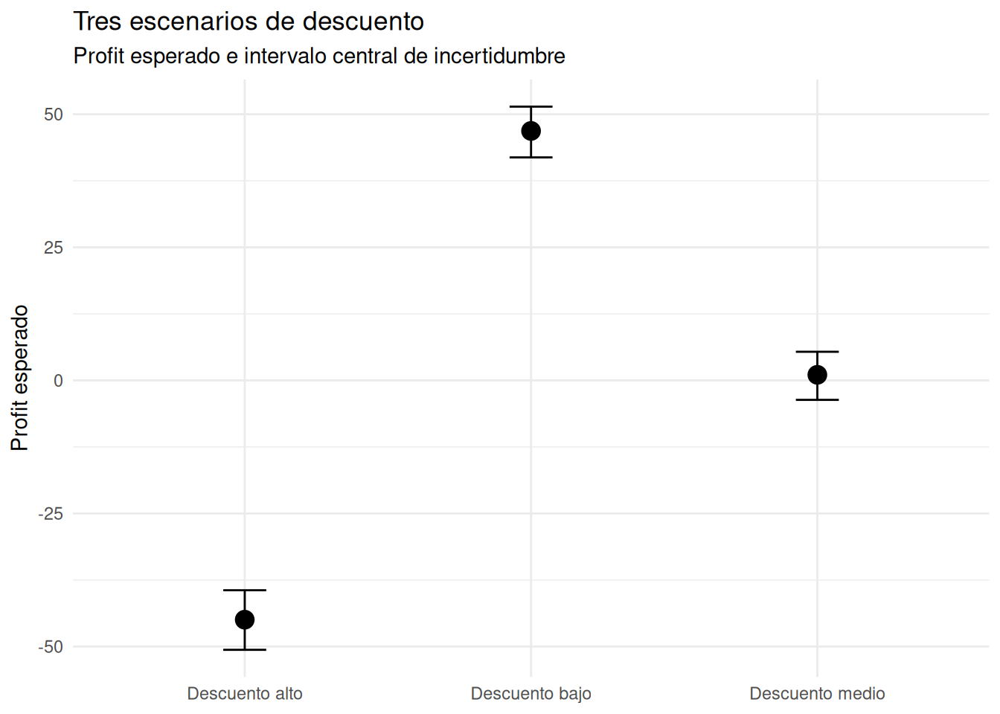

¿Cómo interpretar un modelo bayesiano sin perderse en los coeficientes?
Retail
Comunicación
Visualización
Aprendemos a traducir una regresión bayesiana sobre Superstore en escenarios de negocio y decisiones, incorporando la incertidumbre.
La pregunta de negocio
Después de explorar los datos de Superstore y construir nuestros primeros modelos bayesianos, aparece una pregunta inevitable:
¿Qué significa realmente un modelo bayesiano para alguien que debe tomar decisiones?
Hasta ahora hemos aprendido a observar los datos y a construir modelos capaces de relacionar distintas variables con la rentabilidad.
Pero existe una diferencia importante entre construir un modelo y saber utilizarlo.
Un modelo puede producir una tabla como esta:
| Variable | Mediana |
|---|---|
| Discount | -228,9 |
| Sales | 0,18 |
| Quantity | -3,2 |
| Office Supplies | 50,4 |
| Technology | 41,4 |
Desde el punto de vista estadístico, esa tabla contiene información importante.
Desde el punto de vista empresarial, todavía tenemos varias preguntas:
- ¿Qué significa realmente un coeficiente de -228,9?
- ¿Cuánto importa un aumento del descuento?
- ¿Qué significa que
Salestenga un coeficiente positivo? - ¿Qué significa comparar una categoría con otra?
- ¿Qué tan seguros podemos estar de estas estimaciones?
- Y, sobre todo, ¿cómo convertimos todo esto en una decisión?
Este artículo intenta responder precisamente esa última pregunta.
El objetivo no será aprender otra función de R.
El objetivo será aprender a pasar de:
coeficientes → incertidumbre → escenarios → decisiones.
Comprendiendo el problema
Nuestro problema empresarial es sencillo de plantear.
Queremos comprender qué factores parecen estar asociados con la rentabilidad de una orden de Superstore.
En particular, nos interesa estudiar cuatro variables:
Discount: descuento aplicado.Sales: ventas de la orden.Quantity: cantidad de productos.Category: categoría del producto.
La variable que queremos comprender es:
Profit
Es decir, la ganancia asociada con cada pedido.
Podemos representar la pregunta de una manera muy sencilla:
Discount
│
▼
Sales ───────────────► Profit ◄──────────── Quantity
▲
│
CategoryEsto no significa que estas cuatro variables sean las únicas responsables de la rentabilidad.
Tampoco significa que una asociación encontrada por el modelo sea necesariamente causal.
Significa que queremos estudiar qué relaciones son compatibles con los datos cuando consideramos simultáneamente estas variables.
Esta distinción será importante durante todo el análisis.
Preparando los datos
Utilizaremos nuevamente nuestro dataset de Superstore Sales.
Aquí hacemos dos cosas importantes.
Primero, convertimos Category en un factor porque representa una variable categórica.
Segundo, eliminamos las observaciones que no tienen información disponible en alguna de las variables que utilizaremos en el modelo.
De esta manera, todas las observaciones que llegan al modelo contienen información completa para las variables que necesitamos.
Construyendo el modelo
Utilizaremos una regresión lineal bayesiana mediante rstanarm.
La pregunta que plantea el modelo puede expresarse en lenguaje cotidiano:
¿Cómo cambia el Profit cuando cambian el descuento, las ventas o la cantidad, y cómo difiere entre categorías, teniendo en cuenta simultáneamente las demás variables del modelo?
Esta última parte es fundamental.
Cuando interpretamos el efecto de Discount, por ejemplo, estamos preguntando qué ocurre cuando cambia el descuento manteniendo constantes las demás variables incluidas en el modelo.
Lo mismo sucede con Sales y Quantity.
Para Category, estamos comparando categorías bajo condiciones equivalentes de las demás variables.
El primer contacto con los coeficientes
El modelo produjo las siguientes medianas posteriores:
| Variable | Mediana posterior | MAD_SD |
|---|---|---|
| Intercept | -3,6 | 5,5 |
| Discount | -228,9 | 9,2 |
| Sales | 0,18 | 0,0 |
| Quantity | -3,2 | 0,9 |
| Office Supplies | 50,4 | 5,0 |
| Technology | 41,4 | 6,4 |
| sigma | 198,7 | 1,3 |
No vamos a interpretar esta tabla como si cada número fuera una verdad exacta.
La mediana es una forma de resumir la distribución posterior.
Por tanto, Discount = -228,9 no significa:
“El verdadero efecto del descuento es exactamente -228,9.”
Significa que −228,9 es el valor central de los valores del efecto que resultan plausibles según los datos y el modelo.
Para comprender mejor esa incertidumbre necesitamos observar la distribución posterior y sus intervalos.
¿Qué significa cada coeficiente?
El intercepto
El intercepto tiene una mediana posterior de aproximadamente:
−$3,6
En términos puramente matemáticos, representa el Profit esperado cuando:
Discount = 0;Sales = 0;Quantity = 0;- y la categoría corresponde a la categoría de referencia,
Furniture.
Pero debemos tener cuidado.
Ese escenario probablemente no representa una orden comercial realista.
Una orden con cero ventas y cero unidades no es un escenario empresarial particularmente útil.
Por eso, aunque el intercepto es necesario para construir matemáticamente el modelo, no será uno de los protagonistas de nuestra interpretación empresarial.
Esta es una buena lección:
No todos los coeficientes de un modelo tienen necesariamente la misma utilidad para tomar decisiones.
El descuento
El coeficiente de Discount tiene una mediana posterior de:
−228,9
Aquí aparece una cuestión importante: Discount está expresado como una proporción.
Por ejemplo:
0.00 = 0 %
0.10 = 10 %
0.20 = 20 %
1.00 = 100 %Por tanto, una unidad completa de Discount representa un cambio de 100 puntos porcentuales.
El coeficiente nos indica que un incremento de una unidad completa en Discount está asociado, según el modelo, con una disminución aproximada de:
$228,9 de Profit.
Pero una variación de 100 puntos porcentuales no es una forma particularmente intuitiva de hablar de una política comercial.
Podemos convertir la misma información a una escala más útil.
Si dividimos el efecto entre diez:
−228,9 / 10 ≈ −22,9
tenemos una interpretación aproximada de:
Cada aumento de 10 puntos porcentuales en el descuento está asociado con una disminución de aproximadamente $22,9 en Profit, manteniendo constantes las demás variables del modelo.
Ahora el resultado comienza a hablar el idioma del negocio.
Sin embargo, todavía falta algo.
Una estimación puntual no nos dice cuánta incertidumbre existe alrededor de ella.
Por eso construiremos un intervalo de credibilidad.
Ventas
El coeficiente de Sales tiene una mediana posterior de aproximadamente:
0,184
Esto significa que, manteniendo constantes el descuento, la cantidad y la categoría, un aumento de $1 en Sales está asociado con un aumento esperado de aproximadamente:
$0,184 en Profit.
Es decir, unos 18,4 centavos.
La interpretación debe hacerse con cuidado.
No estamos diciendo que cada dólar adicional vendido produzca necesariamente exactamente 18,4 centavos de ganancia.
Estamos describiendo la relación estimada por el modelo manteniendo constantes las demás variables incluidas.
Además, el valor de Sales y Profit están relacionados por la propia estructura económica del pedido, por lo que este coeficiente debe interpretarse como una asociación dentro del modelo, no como una afirmación causal independiente.
Cantidad
El coeficiente de Quantity tiene una mediana posterior de:
−3,2
Esto significa que, manteniendo constantes:
- descuento;
- ventas;
- categoría;
una unidad adicional en la cantidad está asociada con una disminución esperada de aproximadamente:
$3,2 en Profit.
De nuevo, no estamos diciendo que vender una unidad adicional provoque necesariamente una pérdida de $3,2.
Estamos describiendo el patrón estimado por el modelo después de controlar por las otras variables incluidas.
Esta distinción será importante cuando lleguemos a las recomendaciones.
Las categorías
La categoría de referencia del modelo es Furniture.
Por tanto, los coeficientes:
Office Supplies = 50,4Technology = 41,4
representan diferencias respecto a Furniture.
Así, manteniendo constantes:
- descuento;
- ventas;
- cantidad;
el modelo estima que un pedido de Office Supplies tiene aproximadamente:
$50,4 más de Profit
que un pedido equivalente de Furniture.
Para Technology, la diferencia estimada es de aproximadamente:
$41,4 más de Profit
respecto a Furniture.
Aquí aparece una idea que será muy importante más adelante:
Un coeficiente de categoría no es la rentabilidad esperada de esa categoría.
Es una diferencia respecto a una categoría de referencia.
Para saber cuál sería el Profit esperado de cada categoría en un escenario concreto, tendremos que utilizar las predicciones del modelo.
Y eso nos llevará del mundo de los coeficientes al mundo de los escenarios.
Visualizando los coeficientes
Para que estas estimaciones sean más fáciles de interpretar, vamos a representar sus distribuciones resumidas mediante sus medianas e intervalos de credibilidad.
Primero extraemos las muestras posteriores del modelo.
Los resultados son:
| Variable | Mediana | Límite inferior | Límite superior |
|---|---|---|---|
| Office Supplies | 50,39 | 39,71 | 59,66 |
| Technology | 41,44 | 29,17 | 53,53 |
| Descuento | −228,91 | −247,09 | −212,42 |
| Cantidad | −3,23 | −4,95 | −1,47 |
| Ventas | 0,184 | 0,178 | 0,191 |
Ahora podemos visualizarlos.
La línea vertical situada en cero representa un punto de referencia muy sencillo:
cero significa ausencia de efecto estimado.
Podemos observar que los intervalos de las cinco variables quedan claramente a un lado u otro de ese punto.
El efecto estimado del descuento aparece muy alejado de cero y es negativo.
El efecto de la cantidad también es negativo, aunque su magnitud es mucho menor.
El efecto de las ventas es positivo.
Y las dos categorías presentan diferencias positivas respecto a Furniture.
Pero el gráfico nos permite ver algo más importante que los signos.
También podemos observar la magnitud de la incertidumbre.
Por ejemplo, para Discount, el intervalo va aproximadamente desde:
−247 hasta −212 dólares
para una unidad completa de cambio en Discount.
Por tanto, aunque no conocemos un único valor exacto, el conjunto de valores plausibles se encuentra dentro de un rango bastante definido.
Lo que los coeficientes todavía no nos cuentan
Hasta aquí hemos conseguido responder varias preguntas.
Sabemos:
- qué variables tienen asociaciones positivas o negativas;
- cuál parece tener mayor magnitud;
- qué diferencias existen respecto a
Furniture; - y qué incertidumbre rodea cada estimación.
Pero todavía existe un problema.
Un responsable de negocio difícilmente piensa en:
“¿Qué ocurre si
Discountpasa de 0,17 a 0,18?”
Probablemente piensa en:
“¿Qué ocurre con la rentabilidad si ofrecemos un descuento del 0%, 20% o 40%?”
Esa es una pregunta mucho más cercana a una decisión real.
Y para responderla necesitamos dejar temporalmente la tabla de coeficientes.
Necesitamos llevar el modelo a escenarios concretos.
Ahí es donde la interpretación bayesiana empieza a resultar especialmente útil.
Del coeficiente al escenario
Los coeficientes nos permiten comprender la dirección y magnitud de las relaciones estimadas por el modelo.
Pero todavía podemos hacer algo más útil.
Podemos preguntarle al modelo:
¿Qué Profit sería plausible bajo determinadas condiciones de negocio?
Esta forma de presentar los resultados suele ser mucho más intuitiva.
En lugar de decir:
“El coeficiente de
Discountes −228,9.”
podemos preguntar:
“¿Qué ocurre con el Profit esperado cuando el descuento pasa de 0% a 20% o a 40%?”
La diferencia parece pequeña, pero cambia completamente la conversación.
Ya no estamos hablando solamente de parámetros estadísticos.
Estamos hablando de escenarios que podrían corresponder a decisiones reales.
Construyendo un escenario representativo
Para comparar distintos niveles de descuento necesitamos mantener constantes las demás variables.
De lo contrario, si cambiáramos simultáneamente descuento, ventas, cantidad y categoría, ya no sabríamos qué parte del cambio en Profit corresponde a cada variable.
Utilizaremos valores representativos para construir nuestro escenario:
- ventas = mediana de
Sales; - cantidad = mediana de
Quantity; - categoría =
Office Supplies.
Primero calculamos las medianas.
Los valores obtenidos son:
- Sales = $54,49
- Quantity = 3 unidades
La mediana resulta útil aquí porque representa un pedido típico sin quedar demasiado influenciada por órdenes extremadamente grandes.
Observar toda la trayectoria del descuento
En lugar de estudiar únicamente tres puntos, podemos construir una secuencia de valores de descuento.
Aquí estamos construyendo una tabla con 100 escenarios posibles de descuento.
La única variable que cambia es Discount.
Las demás permanecen constantes:
Sales = $54,49
Quantity = 3
Category = Office SuppliesEsto permite aislar visualmente la relación entre descuento y Profit.
¿Qué significa posterior_epred()?
Ahora utilizamos:
Esta función utiliza las distribuciones posteriores del modelo para obtener valores plausibles del Profit esperado para cada uno de nuestros escenarios.
La palabra posterior es importante.
No estamos utilizando únicamente el valor central de cada coeficiente.
Estamos utilizando la incertidumbre que permanece después de observar los datos.
Para cada uno de los 100 niveles de descuento obtenemos múltiples valores plausibles de Profit.
Podemos imaginarlo así:
Descuento 0%
│
├── Profit plausible
├── Profit plausible
├── Profit plausible
├── ...
└── Profit plausible
Descuento 20%
│
├── Profit plausible
├── Profit plausible
├── Profit plausible
├── ...
└── Profit plausible
Descuento 40%
│
├── Profit plausible
├── Profit plausible
├── ...
└── Profit plausibleEsto es una de las ventajas de trabajar con un modelo bayesiano.
No obtenemos solamente una predicción puntual.
Obtenemos una distribución de valores plausibles.
Visualizando la trayectoria del Profit
Después resumimos esas predicciones mediante una mediana y un intervalo de incertidumbre.
Ahora podemos representar toda la trayectoria.

El gráfico cambia la forma en que podemos leer el modelo.
Ya no tenemos que interpretar mentalmente el coeficiente −228,9.
Ahora podemos observar directamente cómo cambia el Profit esperado a medida que aumenta el descuento.
La tendencia es claramente descendente.
Con un descuento cercano a 0%, el Profit esperado se encuentra alrededor de $50.
Cuando el descuento alcanza aproximadamente el 20%, el Profit esperado se aproxima a $0.
Y a medida que seguimos aumentando el descuento, el Profit esperado pasa progresivamente a terreno negativo.
Alrededor del 80% de descuento, por ejemplo, la pérdida esperada se encuentra aproximadamente en $130, con un intervalo de incertidumbre que se sitúa aproximadamente entre −$145 y −$125.
Lo importante aquí no es memorizar esos valores.
Lo importante es observar la forma de la relación:
A medida que aumenta el descuento, la rentabilidad esperada disminuye.
Y la incertidumbre no desaparece.
La cinta alrededor de la línea nos recuerda que cada predicción es una distribución de valores plausibles, no una cifra exacta.
Tres decisiones comerciales concretas
La trayectoria completa es útil para comprender el comportamiento general.
Pero un responsable de negocio normalmente necesita comparar alternativas concretas.
Podemos simplificar la pregunta:
¿Qué ocurre con la rentabilidad ante un descuento bajo, medio o alto?
Construiremos tres escenarios:
- 0% de descuento;
- 20% de descuento;
- 40% de descuento.
Mantendremos constantes:
- Sales = $54,49;
- Quantity = 3;
- Category = Office Supplies.
La tabla que acabamos de construir representa tres situaciones hipotéticas.
No estamos diciendo que estos sean necesariamente los únicos descuentos posibles.
Son simplemente tres escenarios suficientemente diferentes para visualizar cómo cambia la rentabilidad.
Generando las predicciones de los tres escenarios
Ahora podemos pedirle al modelo que estime el Profit esperado para cada escenario.
Para cada escenario obtenemos 1000 valores provenientes de la distribución posterior.
Podemos resumirlos mediante su mediana y los cuantiles 5% y 95%.
Los resultados son:
| Escenario | Profit esperado | Intervalo central |
|---|---|---|
| Descuento bajo — 0% | $46,86 | $41,89 a $51,43 |
| Descuento medio — 20% | $1,05 | −$3,66 a $5,37 |
| Descuento alto — 40% | −$44,96 | −$50,62 a −$39,42 |
Aquí el modelo empieza a hablar un lenguaje mucho más cercano a la toma de decisiones.
Comparando los tres escenarios

Este es probablemente uno de los gráficos más útiles de todo el análisis.
Con un descuento de 0%, el Profit esperado es de aproximadamente $46,9, con un intervalo central de incertidumbre entre aproximadamente $41,9 y $51,4.
Con un descuento del 20%, el Profit esperado prácticamente desaparece.
La mediana es de aproximadamente $1,0, mientras que el intervalo se extiende desde una pérdida de aproximadamente $3,7 hasta una ganancia de aproximadamente $5,4.
Esto significa que, bajo este escenario, el resultado es compatible tanto con una pequeña ganancia como con una pequeña pérdida.
Con un descuento del 40%, la situación cambia considerablemente.
El Profit esperado es aproximadamente −$45, con un intervalo que permanece completamente en terreno negativo: aproximadamente entre −$50,6 y −$39,4.
La comparación permite expresar el resultado de una manera mucho más útil:
En este escenario representativo, aumentar el descuento del 0% al 20% prácticamente elimina la rentabilidad esperada, mientras que llevarlo al 40% sitúa el Profit claramente en terreno negativo.
Esto es mucho más accionable que simplemente decir:
“El coeficiente de Discount es −228,9.”
Una precaución importante
Hay que recordar qué estamos haciendo realmente.
Estos escenarios mantienen constantes:
Sales = $54,49
Quantity = 3
Category = Office SuppliesPor tanto, no estamos simulando todo lo que podría ocurrir en una campaña comercial real.
Por ejemplo, un descuento mayor podría aumentar las ventas o modificar la cantidad comprada.
Nuestro modelo no está simulando esos posibles cambios.
Estamos respondiendo una pregunta más específica:
¿Cómo cambia el Profit esperado cuando modificamos el descuento y mantenemos constantes las demás características del pedido?
Esta precisión es importante.
Un escenario estadístico es una herramienta para aislar una relación.
No es necesariamente una simulación completa de la realidad empresarial.
¿Y qué ocurre con las categorías?
El mismo razonamiento puede utilizarse para comparar las categorías.
Podemos preguntar:
Si dos pedidos tienen las mismas ventas, la misma cantidad y el mismo descuento, ¿cómo cambia el Profit esperado según la categoría?
Para responderlo construiremos tres escenarios:
- Furniture;
- Office Supplies;
- Technology.
Mantendremos:
- Discount = 10%;
- Sales = $54,49;
- Quantity = 3.
Ahora tenemos tres pedidos hipotéticos que son iguales en todas las variables excepto en la categoría.
Eso permite realizar una comparación más directa.
Predicciones por categoría
Resumimos nuevamente las distribuciones posteriores:
Los resultados obtenidos son:
| Categoría | Profit esperado | Intervalo central |
|---|---|---|
| Furniture | −$26,41 | −$33,35 a −$19,22 |
| Office Supplies | $23,90 | $19,39 a $28,20 |
| Technology | $14,91 | $6,83 a $23,19 |
Ahora podemos representar esta comparación.

El resultado es especialmente interesante.
Bajo este escenario:
Furniturepresenta un Profit esperado de aproximadamente −$26,4;Technologypresenta un Profit esperado de aproximadamente $14,9;Office Suppliespresenta un Profit esperado de aproximadamente $23,9.
Y aquí aparece una diferencia importante respecto a la interpretación de los coeficientes.
Anteriormente dijimos que Office Supplies tenía aproximadamente $50 más de Profit que Furniture.
Eso sigue siendo cierto para el efecto del coeficiente.
Pero cuando incorporamos el escenario completo, obtenemos valores absolutos de Profit diferentes:
Furniture ≈ −$26
Technology ≈ $15
Office Supplies ≈ $24¿Por qué?
Porque ahora estamos incorporando también:
- el intercepto;
- el efecto del descuento;
- el efecto de las ventas;
- el efecto de la cantidad;
- y el efecto específico de cada categoría.
Esto demuestra una idea fundamental:
Los coeficientes explican cómo cambia el resultado. Las predicciones nos ayudan a visualizar cuál podría ser el resultado bajo determinadas condiciones.
Y precisamente por eso no debemos quedarnos únicamente con la tabla de coeficientes.
Una primera lectura empresarial
Hasta este momento podemos construir una historia bastante clara.
El modelo encuentra evidencia compatible con una relación negativa entre descuento y Profit.
Además, bajo nuestro escenario representativo:
- sin descuento, el Profit esperado es positivo;
- con 20% de descuento, la rentabilidad se aproxima a cero;
- con 40%, la rentabilidad esperada es claramente negativa.
Por otro lado, las categorías presentan diferencias importantes.
Con las mismas ventas, cantidad y descuento:
- Furniture presenta una pérdida esperada;
- Technology presenta una ganancia esperada;
- Office Supplies presenta la mayor ganancia esperada de los tres escenarios.
Pero todavía debemos hacer una pregunta más importante:
¿Qué debería hacer realmente un analista con esta información?
Porque encontrar una relación estadística no es todavía una recomendación empresarial.
La última parte del análisis consistirá precisamente en convertir estos resultados en una forma prudente de tomar decisiones bajo incertidumbre.
Del análisis a la decisión
Llegados a este punto, ya no necesitamos mirar solamente los coeficientes.
Podemos utilizar el modelo para comparar situaciones concretas.
Y esa es probablemente una de las ideas más importantes de este análisis:
Un modelo bayesiano resulta especialmente útil cuando transforma incertidumbre estadística en escenarios que podemos discutir en términos de negocio.
Nuestro análisis ha encontrado tres señales particularmente importantes.
La primera está relacionada con los descuentos.
La segunda con las categorías.
La tercera con la incertidumbre que permanece alrededor de todas nuestras estimaciones.
¿Qué aprendimos sobre los descuentos?
El efecto estimado del descuento es claramente negativo.
La mediana posterior del coeficiente fue de aproximadamente:
−228,9
y su intervalo de credibilidad del 95% se situó entre aproximadamente:
−247,1 y −212,4
Recordemos que Discount está expresado como proporción.
Por tanto, una unidad completa corresponde a un cambio de 100 puntos porcentuales.
Una forma más intuitiva de expresarlo es:
Un aumento de 10 puntos porcentuales en el descuento está asociado con una disminución aproximada de $22,9 en Profit, manteniendo constantes las demás variables del modelo.
El análisis de escenarios refuerza esta señal.
Para un pedido representativo de Office Supplies, con:
- ventas de $54,49;
- 3 unidades;
obtuvimos:
| Descuento | Profit esperado | Intervalo central |
|---|---|---|
| 0% | $46,86 | $41,89 a $51,43 |
| 20% | $1,05 | −$3,66 a $5,37 |
| 40% | −$44,96 | −$50,62 a −$39,42 |
La diferencia entre estos escenarios es importante.
Con 0% de descuento, el resultado esperado es claramente positivo.
Con 20%, el resultado se aproxima al punto de equilibrio.
Con 40%, el intervalo permanece completamente por debajo de cero.
Por tanto, dentro de las condiciones de este escenario, los descuentos elevados parecen especialmente difíciles de conciliar con una rentabilidad positiva.
Pero cuidado: esto no significa que “los descuentos causen pérdidas”
Aquí debemos detenernos un momento.
Es tentador mirar el coeficiente de Discount y concluir:
“Los descuentos provocan pérdidas.”
Pero esa afirmación sería demasiado fuerte para el análisis que hemos realizado.
Nuestro modelo es observacional.
Estamos estudiando órdenes que realmente ocurrieron y buscando relaciones entre sus variables.
No hemos realizado un experimento controlado en el que asignemos aleatoriamente distintos descuentos a pedidos equivalentes.
Por tanto, el resultado debe interpretarse como:
Los datos muestran una asociación negativa entre el nivel de descuento y Profit, después de considerar las demás variables incluidas en el modelo.
Podrían existir otros factores que no estamos considerando.
Por ejemplo:
- tipo de producto;
- región;
- cliente;
- fecha;
- condiciones comerciales;
- costos específicos;
- promociones;
- características del mercado.
Si alguno de estos factores está relacionado tanto con el descuento como con la rentabilidad, podría estar influyendo en la relación observada.
Por eso el modelo nos ayuda a identificar una señal.
No elimina la necesidad de análisis adicional.
¿Qué aprendimos sobre las categorías?
La comparación entre categorías también resulta interesante.
Manteniendo:
- ventas = $54,49;
- cantidad = 3;
- descuento = 10%;
obtuvimos:
| Categoría | Profit esperado | Intervalo central |
|---|---|---|
| Furniture | −$26,41 | −$33,35 a −$19,22 |
| Technology | $14,91 | $6,83 a $23,19 |
| Office Supplies | $23,90 | $19,39 a $28,20 |
Bajo estas condiciones, Furniture presenta un resultado esperado negativo.
Technology presenta un resultado positivo.
Y Office Supplies presenta el mayor Profit esperado de los tres escenarios.
Esto es consistente con lo que observamos anteriormente en los coeficientes.
Recordemos que los coeficientes de las categorías eran diferencias respecto a Furniture.
El modelo estimaba aproximadamente:
- $41 más para Technology respecto a Furniture;
- $50 más para Office Supplies respecto a Furniture.
Cuando transformamos esas diferencias en escenarios completos, podemos observar directamente el Profit esperado de cada categoría.
Esta es precisamente la ventaja de pasar de los coeficientes a las predicciones.
Una observación importante sobre las categorías
Tampoco deberíamos concluir:
“Office Supplies siempre es más rentable que Technology.”
Nuestro escenario representa únicamente una combinación concreta de condiciones:
Sales = $54,49
Quantity = 3
Discount = 10%Si cambiamos esas condiciones, las predicciones también cambiarán.
Por ejemplo, una orden de Technology con ventas mucho mayores podría presentar un Profit muy diferente.
Por eso debemos pensar en estas predicciones como:
escenarios condicionados
y no como características universales de cada categoría.
Esta forma de pensar es especialmente importante cuando utilizamos modelos para apoyar decisiones.
La incertidumbre no desaparece
Una de las ventajas más interesantes del enfoque bayesiano es que no necesitamos ocultar la incertidumbre.
Podemos mostrarla.
Por ejemplo, para el escenario de descuento del 40% obtuvimos:
Profit esperado = −$44,96
con un intervalo central aproximadamente entre:
−$50,62 y −$39,42.
No tenemos que elegir entre decir:
“La pérdida será exactamente de $44,96.”
o:
“No sabemos absolutamente nada.”
Existe una tercera posibilidad.
Podemos decir:
El resultado más plausible se encuentra alrededor de una pérdida de $45, y los valores centrales de nuestra distribución de predicciones se encuentran aproximadamente entre $39 y $51 de pérdida.
Esto es mucho más cercano a la forma en que realmente se toman decisiones bajo incertidumbre.
¿Qué haría un analista con esta información?
Aquí llegamos al punto más importante del artículo.
El modelo no debería convertirse automáticamente en una política comercial.
Su función es aportar evidencia para discutir las alternativas.
A partir de nuestros resultados, un analista podría plantear al menos cuatro acciones.
1. Revisar los descuentos elevados
Los resultados muestran una relación negativa bastante clara entre descuento y Profit.
Por tanto, los descuentos elevados deberían ser revisados con especial atención.
No necesariamente significa prohibirlos.
Significa preguntarse:
¿Qué volumen adicional de ventas necesitamos para compensar la pérdida de margen asociada con el descuento?
Esta pregunta podría convertirse en el siguiente análisis.
2. Comparar estrategias por categoría
Las categorías no presentan el mismo comportamiento bajo condiciones equivalentes.
Por tanto, podría ser poco recomendable aplicar una única política de descuentos a todas las categorías.
Una estrategia comercial podría necesitar distinguir entre:
- Furniture;
- Technology;
- Office Supplies.
La información del modelo sugiere que estas categorías merecen ser analizadas por separado.
3. Utilizar escenarios antes de modificar una política comercial
Antes de establecer un nuevo descuento general, podemos utilizar el modelo para preguntar:
¿Qué ocurre con 5%?
¿Qué ocurre con 10%?
¿Qué ocurre con 15%?
¿Qué ocurre con 20%?Y posteriormente extender el análisis incorporando otras variables.
Esto convierte al modelo en una herramienta para explorar decisiones.
No en una máquina que simplemente produce coeficientes.
4. Buscar variables que todavía no están en el modelo
Nuestro modelo explica solamente una parte del comportamiento de Profit.
La presencia del parámetro sigma, con una mediana de aproximadamente 198,7, nos recuerda que existe una importante variabilidad residual alrededor de las predicciones.
Pero debemos interpretar este valor correctamente.
No significa:
“Hay $198,7 de ganancias que el modelo no explica.”
Sigma representa la escala de la variabilidad residual del modelo.
En términos sencillos:
Incluso después de considerar descuento, ventas, cantidad y categoría, los valores reales de Profit todavía presentan una dispersión importante alrededor de las predicciones del modelo.
Esto nos indica que existen otros factores que podrían ayudar a comprender mejor la rentabilidad.
Y esa observación es muy útil para un analista.
Un buen modelo no solamente responde preguntas.
También ayuda a descubrir qué preguntas todavía no hemos respondido.
Una lectura conjunta del modelo
Podemos resumir nuestro análisis en una sola imagen mental.
MODELO
│
┌──────────┼──────────┐
│ │ │
Descuento Ventas Cantidad
│ │ │
▼ ▼ ▼
Profit Profit Profit
│
│
▼
Categoría
│
▼
ProfitEl modelo encontró:
Descuento
Una asociación negativa bastante clara con Profit.
Ventas
Una asociación positiva: aproximadamente $0,184 de Profit por cada dólar adicional de Sales, manteniendo constantes las demás variables.
Cantidad
Una asociación negativa de aproximadamente $3,2 por unidad adicional, bajo las condiciones del modelo.
Categoría
Diferencias positivas respecto a Furniture para Office Supplies y Technology.
Pero ninguna de estas cifras debería interpretarse de manera aislada.
La utilidad aparece cuando combinamos:
efecto + incertidumbre + contexto + escenario.
Coeficientes versus escenarios
Podemos resumir todo el aprendizaje del artículo mediante esta comparación.
| Coeficientes | Escenarios |
|---|---|
| Explican relaciones | Simulan situaciones concretas |
| Ayudan a entender magnitudes | Ayudan a comparar decisiones |
| Muestran efectos individuales | Combinan varios efectos |
| Son útiles para comprender el modelo | Son útiles para conversar sobre el negocio |
| Necesitan interpretación | Se acercan al lenguaje de decisión |
Ninguno sustituye al otro.
Los coeficientes nos permiten comprender la estructura del modelo.
Los escenarios nos permiten utilizar esa estructura para explorar preguntas concretas.
Por eso, un análisis bayesiano aplicado no debería terminar necesariamente con una tabla de coeficientes.
Muchas veces, ese es solamente el comienzo de la conversación.
¿Qué nos dice realmente este modelo?
Después de todo el análisis podemos regresar a nuestra pregunta inicial:
¿Qué significa realmente un modelo para quien debe tomar decisiones?
La respuesta no es:
“Significa mirar los coeficientes.”
Significa algo más amplio.
Un modelo nos permite organizar la evidencia disponible y utilizarla para explorar situaciones que podrían ser relevantes para el negocio.
En nuestro caso encontramos evidencia compatible con una relación negativa entre descuentos y rentabilidad.
También encontramos diferencias entre categorías.
Y pudimos transformar esas relaciones en escenarios concretos.
Pero el modelo no nos dice automáticamente qué decisión tomar.
La decisión requiere incorporar:
- objetivos del negocio;
- costos;
- estrategia comercial;
- restricciones;
- información adicional;
- y, sobre todo, la incertidumbre que permanece.
Una recomendación prudente
Si tuviéramos que entregar este análisis a un responsable comercial, probablemente no recomendaríamos simplemente:
“Elimine los descuentos.”
Eso sería una conclusión demasiado fuerte.
Una recomendación más razonable sería:
“Los datos muestran una relación negativa entre el descuento y Profit. En los escenarios analizados, los descuentos del 20% llevan la rentabilidad esperada cerca del punto de equilibrio, mientras que un descuento del 40% produce un Profit esperado claramente negativo. Antes de establecer descuentos elevados de forma generalizada, convendría evaluar su impacto por categoría y comprobar si el incremento esperado en ventas compensa la reducción de rentabilidad.”
Esta recomendación tiene una característica importante:
reconoce lo que sabemos y también lo que todavía no sabemos.
Ese es precisamente el tipo de comunicación que buscamos en Business Analytics Bayesiano.
Reflexión bayesiana
Este análisis comenzó con una tabla de coeficientes.
Terminó con escenarios de negocio.
Ese recorrido es importante.
Un enfoque puramente numérico podría detenerse en:
Discount = -228,9
Sales = 0,184
Quantity = -3,2Pero esos números, por sí solos, no toman decisiones.
La estadística nos ayuda a resumir la evidencia.
La visualización nos ayuda a comprenderla.
El modelo bayesiano nos permite representar la incertidumbre.
Y el análisis de escenarios nos ayuda a conectar todo ello con preguntas empresariales.
Por eso, quizá la principal lección de este artículo sea:
El objetivo de un modelo no es producir coeficientes. Es ayudarnos a pensar mejor cuando no tenemos certeza.
En nuestro caso todavía no sabemos exactamente qué ocurriría si una empresa cambiara su política de descuentos.
Pero ahora sabemos algo más útil:
qué relación aparece en los datos, qué magnitud parece tener, qué escenarios son plausibles y dónde permanece la incertidumbre.
Y eso ya es información que puede contribuir a una mejor decisión.
Conclusiones
Después de construir e interpretar nuestro modelo bayesiano podemos quedarnos con cinco ideas.
1. Un coeficiente necesita contexto
Un número como −228,9 no tiene mucho significado hasta que sabemos qué variable representa, en qué escala está medida y qué variables estamos manteniendo constantes.
2. La incertidumbre forma parte del resultado
No debemos presentar una estimación puntual como si fuera una verdad exacta.
Los intervalos de credibilidad nos muestran qué rango de valores resulta compatible con nuestro análisis.
3. Los escenarios pueden ser más intuitivos que los coeficientes
Comparar descuentos del 0%, 20% y 40% puede ser mucho más fácil de comprender para un responsable de negocio que interpretar directamente un coeficiente de regresión.
4. Una predicción no es una recomendación
El modelo proporciona evidencia.
La decisión requiere además contexto empresarial.
5. Un buen análisis también muestra lo que todavía desconocemos
La incertidumbre residual nos recuerda que las variables incluidas en nuestro modelo no explican todo lo que ocurre con Profit.
Y precisamente ahí aparecen nuevas preguntas.
Apéndice — Código completo
Este apéndice contiene el código utilizado durante el análisis en el mismo orden en que aparece a lo largo del artículo.
Los bloques utilizan eval: false para evitar que el análisis vuelva a ejecutarse durante el renderizado del documento.
Esto permite conservar el código completo, con resaltado de sintaxis, para que el lector pueda estudiarlo o reutilizarlo.
1. Cargar las librerías y los datos
options(scipen = 999)
library(tidyverse)
library(ggplot2)
library(rstanarm)
library(posterior)
library(bayesplot)
superstore <- read_csv(
"/kaggle/input/datasets/superstore2-5/superstore_sales.csv",
guess_max = 10000,
show_col_types = FALSE
)
superstore <- superstore %>%
mutate(
Category = factor(Category)
) %>%
drop_na(
Profit,
Discount,
Sales,
Quantity,
Category
)2. Crear el modelo bayesiano
set.seed(1234)
modelo_profit <- stan_glm(
Profit ~ Discount + Sales + Quantity + Category,
data = superstore,
family = gaussian(),
chains = 2,
iter = 1000,
refresh = 0,
seed = 1234
)3. Extraer las muestras posteriores
draws <- as.data.frame(
as.matrix(modelo_profit)
)4. Seleccionar los coeficientes de interés
variables_modelo <- c(
"Discount",
"Sales",
"Quantity",
"CategoryOffice Supplies",
"CategoryTechnology"
)
coeficientes <- draws %>%
select(all_of(variables_modelo)) %>%
pivot_longer(
cols = everything(),
names_to = "Variable",
values_to = "Valor"
)5. Resumir las distribuciones posteriores
coeficientes <- coeficientes %>%
group_by(Variable) %>%
summarise(
Mediana = median(Valor),
Inferior = quantile(Valor, 0.025),
Superior = quantile(Valor, 0.975),
.groups = "drop"
)6. Renombrar las variables
coeficientes <- coeficientes %>%
mutate(
Variable = recode(
Variable,
"Discount" = "Descuento",
"Sales" = "Ventas",
"Quantity" = "Cantidad",
"CategoryOffice Supplies" = "Office Supplies",
"CategoryTechnology" = "Technology"
)
)7. Gráfico de coeficientes
ggplot(
coeficientes,
aes(
x = Mediana,
y = reorder(Variable, Mediana)
)
) +
geom_vline(
xintercept = 0,
linetype = "dashed"
) +
geom_errorbar(
aes(
xmin = Inferior,
xmax = Superior
),
orientation = "y",
height = 0.15
) +
geom_point(size = 3) +
labs(
title = "Efectos estimados sobre Profit",
subtitle = "Mediana posterior e intervalo de credibilidad del 95%",
x = "Cambio plausible en Profit",
y = NULL
) +
theme_minimal()8. Calcular valores representativos
ventas_mediana <- median(
superstore$Sales,
na.rm = TRUE
)
cantidad_mediana <- median(
superstore$Quantity,
na.rm = TRUE
)9. Crear los escenarios de descuento
newdata_descuento <- tibble(
Discount = seq(
min(superstore$Discount, na.rm = TRUE),
max(superstore$Discount, na.rm = TRUE),
length.out = 100
),
Sales = ventas_mediana,
Quantity = cantidad_mediana,
Category = factor(
"Office Supplies",
levels = levels(superstore$Category)
)
)10. Generar las predicciones posteriores
pred_descuento <- posterior_epred(
modelo_profit,
newdata = newdata_descuento
)11. Resumir las predicciones
pred_descuento_resumen <- tibble(
Discount = newdata_descuento$Discount,
Mediana = apply(
pred_descuento,
2,
median
),
Inferior = apply(
pred_descuento,
2,
quantile,
probs = 0.05
),
Superior = apply(
pred_descuento,
2,
quantile,
probs = 0.95
)
)12. Gráfico de la trayectoria del descuento
ggplot(
pred_descuento_resumen,
aes(
x = Discount * 100,
y = Mediana
)
) +
geom_ribbon(
aes(
ymin = Inferior,
ymax = Superior
),
alpha = 0.2
) +
geom_line(linewidth = 1) +
labs(
title = "Profit esperado bajo distintos niveles de descuento",
subtitle = "Ventas y cantidad mantenidas en valores representativos",
x = "Descuento (%)",
y = "Profit esperado"
) +
theme_minimal()13. Crear los tres escenarios de descuento
escenarios <- tibble(
Escenario = c(
"Descuento bajo",
"Descuento medio",
"Descuento alto"
),
Discount = c(
0.00,
0.20,
0.40
),
Sales = ventas_mediana,
Quantity = cantidad_mediana,
Category = factor(
"Office Supplies",
levels = levels(superstore$Category)
)
)14. Predicciones de los tres escenarios
pred_escenarios <- posterior_epred(
modelo_profit,
newdata = escenarios
)15. Resumen de los escenarios
escenarios_resumen <- tibble(
Escenario = escenarios$Escenario,
Mediana = apply(
pred_escenarios,
2,
median
),
Inferior = apply(
pred_escenarios,
2,
quantile,
probs = 0.05
),
Superior = apply(
pred_escenarios,
2,
quantile,
probs = 0.95
)
)16. Gráfico de escenarios
ggplot(
escenarios_resumen,
aes(
x = Escenario,
y = Mediana
)
) +
geom_errorbar(
aes(
ymin = Inferior,
ymax = Superior
),
width = 0.15
) +
geom_point(size = 4) +
labs(
title = "Tres escenarios de descuento",
subtitle = "Profit esperado e intervalo central de incertidumbre",
x = NULL,
y = "Profit esperado"
) +
theme_minimal()17. Crear escenarios por categoría
escenarios_categoria <- expand_grid(
Category = factor(
levels(superstore$Category),
levels = levels(superstore$Category)
),
Discount = 0.10,
Sales = ventas_mediana,
Quantity = cantidad_mediana
)18. Predicciones por categoría
pred_categoria <- posterior_epred(
modelo_profit,
newdata = escenarios_categoria
)19. Resumen de las predicciones por categoría
categoria_resumen <- tibble(
Category = escenarios_categoria$Category,
Mediana = apply(
pred_categoria,
2,
median
),
Inferior = apply(
pred_categoria,
2,
quantile,
probs = 0.05
),
Superior = apply(
pred_categoria,
2,
quantile,
probs = 0.95
)
)20. Gráfico de Profit esperado por categoría
ggplot(
categoria_resumen,
aes(
x = Category,
y = Mediana
)
) +
geom_errorbar(
aes(
ymin = Inferior,
ymax = Superior
),
width = 0.15
) +
geom_point(size = 4) +
labs(
title = "Profit esperado por categoría",
subtitle = "Mismas ventas, cantidad y descuento",
x = NULL,
y = "Profit esperado"
) +
theme_minimal()Cierre
Este artículo comenzó con una tabla de coeficientes y terminó con algo mucho más útil: una forma de utilizar un modelo bayesiano para comparar escenarios empresariales sin esconder la incertidumbre.
Ese es el cambio de perspectiva que queremos introducir en esta colección.
El modelo no es el protagonista.
La pregunta de negocio lo es.
Y los coeficientes, las distribuciones posteriores y las predicciones son simplemente herramientas que nos ayudan a responderla.